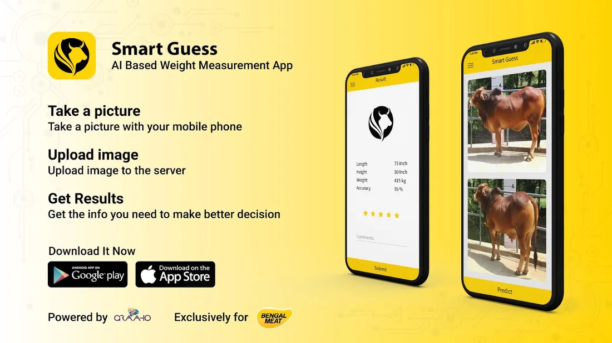
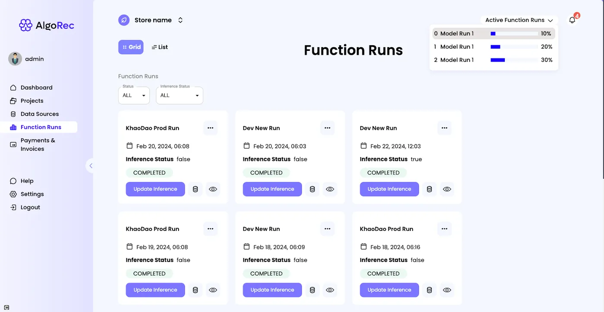
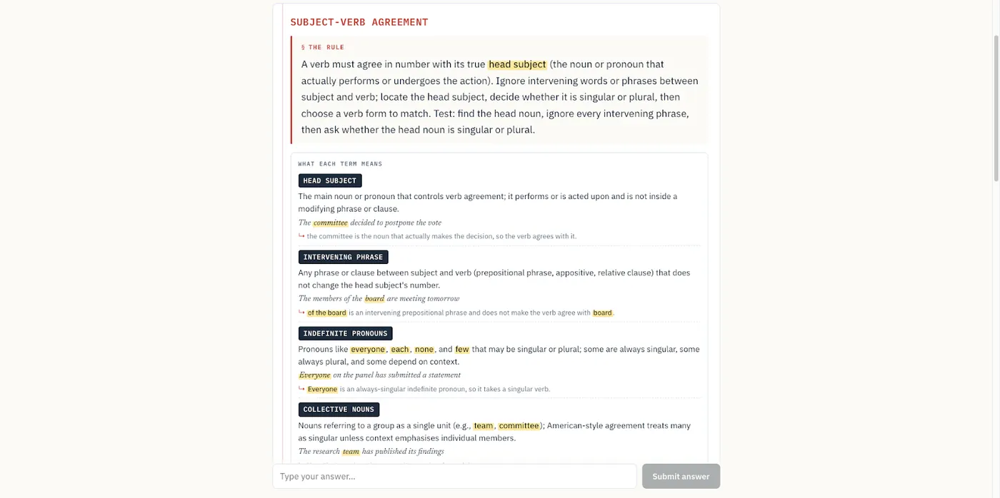
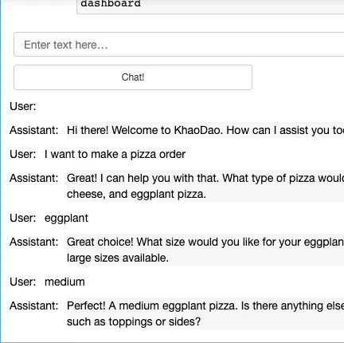
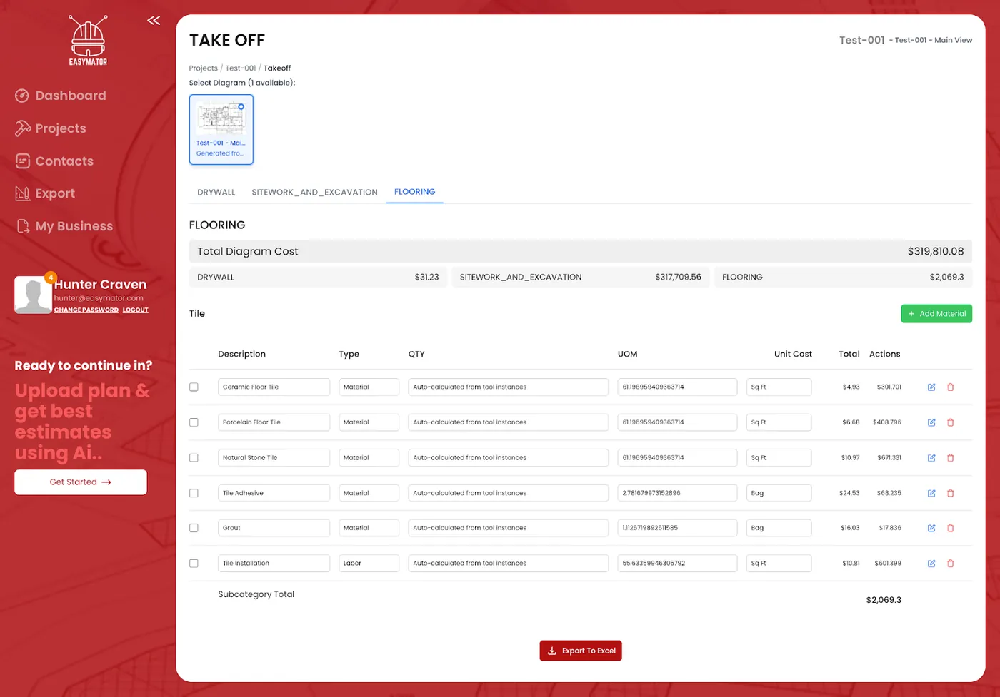
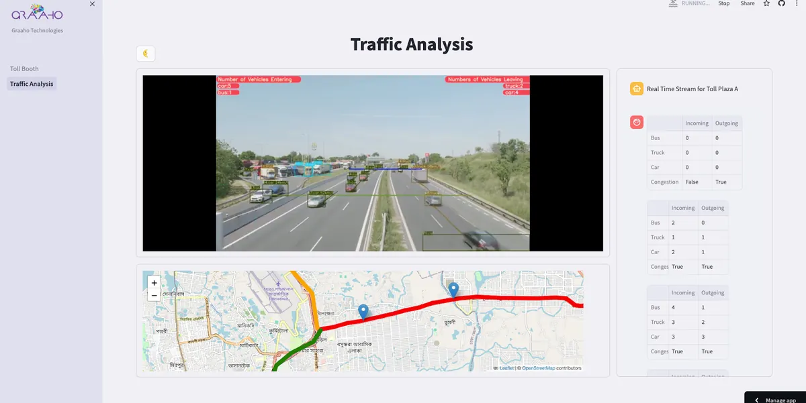
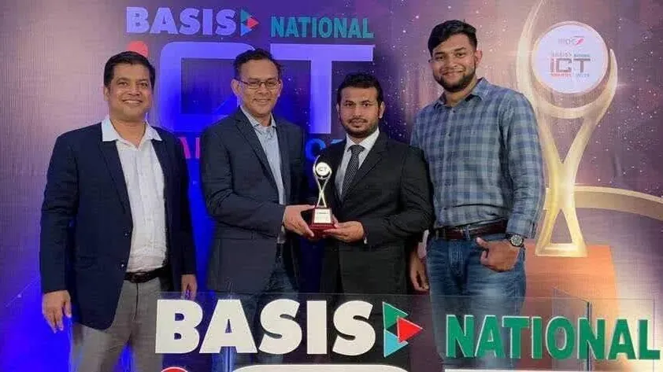

Applied machine learning research · Dhaka, Bangladesh
A system that acts on someone's behalf needs an instrument that checks it.
I build the instruments.
Datasets, benchmarks and audits for personalization systems: the measurement side of trustworthy AI,
rather than the model side. My work asks whether a reported number survives contact with the conditions
it will actually meet: a different year, a different population, a user who cannot see what the system
withheld.
The clearest example is BoviShift, a longitudinal benchmark I lead as first author. I collected its data
myself over six years, from 2021 to 2026, and built it to separate what a model has genuinely learned
from what it merely remembers.
As a Staff Machine Learning Engineer at Graaho Technologies,
I have spent nearly eight years shipping recommendation, vision and LLM systems in production. I am
applying to US PhD programmes in computer science for Fall 2027, and I am open to applied scientist roles.
Personalization is where AI most often acts for someone instead of answering them. That makes it
the right place to ask a measurement question: how would we know when a system has stopped deserving the
trust it already has?
Most evaluation in this area scores a model on a held-out slice of the data that trained it. That answers
a narrow question very reliably. The failures that hurt in deployment sit outside it: an animal, or a user,
who appears on both sides of a split and quietly inflates the score; a population that drifts for years
while the benchmark stands still; an explanation that reads well and has nothing to do with how the model
actually ranked.
So I build instruments rather than models: longitudinal datasets that make drift
measurable, protocols that separate leakage from real generalisation, and audits that check whether a
system's account of itself is true.
Longer term I want to take the same problem to agentic systems, which make decisions on
a person's behalf, where an unverified decision costs more than a bad suggestion. I have not published on
agents yet. The benchmarks and audits below are the groundwork an honest agent evaluation will need.
All of it comes out of production. Nearly eight years of shipping recommenders, vision pipelines and
multi-tenant inference taught me which failures stay silent. The research is how I measure the things I
used to patch.
Research
Two active threads
Project
BoviShift
Status
Under review
Role
First author, project lead
Data
2,657 unique bulls, collected 2021–2026
Collaborators
Nilambar Halder Tonmoy, Indiana University; Prof. Dr. Saef Ullah Miah, AIUB
Separating what a benchmark measures from what it merely remembers
From 2021 to 2026 I collected images of the bulls sold through one livestock marketplace in Bangladesh:
2,657 animals, with every photograph tied to the animal it shows. Six years is long enough for the
population to change under the task. The identity link is what lets you ask the uncomfortable question
of any vision benchmark: is the model generalising, or does it remember the cow?
The contribution is a three-way protocol decomposition. A random split lets the same animal sit on both
sides of the boundary. Holding identities apart shows what the model really generalises, and testing
forward in time shows what the population did. The drop between the first two protocols is identity
leakage; the drop between the second and third is temporal shift. Most personalization data is repeated
observation of the same people, so the decomposition carries straight over to recommender benchmarks.
The evaluation design. This shows only which animals each protocol allows on each side of the
split. The measured gaps are in the paper.
Nilambar Halder Tonmoy and Prof. Dr. Saef Ullah Miah joined me for the experiments and the submission,
and the three of us are extending the benchmark together.
Excluded by design
The 2024 cohort is held out of the primary temporal arm. Its missingness is non-random, and including
it would let a collection artifact pass as distribution shift. That is the error the protocol exists
to prevent.
Project
Audit of LLM-based recommenders
Status
In preparation
Role
Sole author
Examines
Explanation faithfulness, hallucination, fairness
Constraint
Runs without GPU compute
When a recommender explains itself, is the explanation true?
Language models have made recommendation explanations fluent, and fluency is easy to mistake for honesty.
Ask an LLM why it surfaced an item and it will give you a reason whether or not that reason had anything
to do with the ranking. Users reasonably treat a stated reason as a real one. The gap between the two is
measurable, and mostly unmeasured.
The audit tests three things together: whether an explanation describes the actual basis of a
recommendation, whether the system invents attributes of the items it recommends, and whether either
failure falls unevenly across groups of users. I built it to run without GPU compute on purpose. An
audit that needs a cluster is one most teams will never run against their own system.
CID: Cow Images Dataset
Published, ICCA 2022
The first public release from this line of work: 513 cattle across 8 breeds, with 2,052 photographs and
15,812 video frames, each animal annotated for ten attributes including weight, height, age and breed.
I released it with regression and classification baselines, so the data arrived with evidence of what
it supports. It is the most-starred and most-forked repository on my GitHub.
Mask R-CNN finds the girth, front and back of the animal; a multi-input-output network predicts height,
length, weight and breed. Length and weight were badly imbalanced, so I treated them as regression rather
than forcing them into classes. It was second runner-up for AI in Agriculture at the BASIS National ICT
Awards 2019. A later PyTorch version, trained on 13,964 images, is still used for procurement screening
at Bengal Meat.

The Smart Guess app as it launched.
Categorized Affect Map
Published, ICCA 2020 · undergraduate thesis
A crowdsourced GIS that classifies places by problem category from how people feel about them, using a
category-affect-space model and multi-label classification. I led the thesis group from a Top 10 finish
at the SDG Hackathon 2018 to publication. Looking back, it was the same instinct in an earlier form: the
contribution was a way of collecting and representing data, not a model.
A context-aware food recommender that conditions on weather, day of week and time of day. I started with
classical collaborative filtering on Surprise and Implicit, moved to DLRM once cold start and sparsity
became the real problems, and then spent most of the effort on low-latency online prediction. Built under
NUS supervision in their prototype development programme.
Publications
Peer reviewed and in progress
BoviShift: A Six-Year Multi-Attribute Audit of Visual Cattle Phenotyping
No candidate model went live until it had been scored by AUC against a popularity baseline. A recommender
that cannot beat "show the bestsellers" is an expensive way to do nothing. That rule was an early, informal
version of what my research now does deliberately, and it ran in production years before I had a name
for it.
The setting made the rule necessary. The signal is implicit, since nobody rates anything and they just buy.
The matrix is overwhelmingly sparse, and a degraded model fails silently, returning ten confident items
that are wrong. When every API call is billed, plausible-but-wrong stops being a modelling inconvenience
and becomes a billing dispute. I researched and built two models on NVIDIA Merlin and an ALS model on
implicit feedback, weighting confidence so that a repeat purchase outweighs a single glance, and masked
already-purchased items from every ranking.
Serving is a search problem: embeddings are precomputed during training and queried through an approximate
nearest-neighbour index in 64 dimensions. Training runs go over Redis to isolated Celery workers with hard
time limits and memory guards; every run is versioned in MLflow, exactly one is ever marked servable, and
quota is checked before inference rather than after. Two real problems it solved: predicting the next
restaurant for 18,948 delivery customers, and turning a WooCommerce catalogue into a live endpoint on a
five-minute sync.

AlgoRec's run view, where training and inference runs are tracked per project.
I built Margin for my own exam preparation first. It adapts to one learner: two-stage mastery, spaced
review, and error patterns from the last three graded essays pulling matching lessons forward. That makes
it a personalization system, and personalization built on a language model inherits the model's failure
modes. A hallucinated band score sends a candidate into a real exam prepared against a false signal.
So it is also a working test of the idea behind my research: the model does the hard reasoning, and
deterministic code decides what the learner is allowed to see. Every response crosses a validation
boundary before it renders. Eighteen normalizers treat provider output as untrusted input. Scores are
clamped to each exam's legal scale, band aggregates are recomputed in code from their components so a
headline can never contradict the numbers beneath it, and the client, not the model, owns every state
machine. Each guard is there because a real provider broke that rule. The 254 teaching entries are written
by hand, so they cannot hallucinate or change between runs.

Margin flagging a subject-verb agreement error in a practice essay.
Negative result, kept
I raised an output ceiling I believed was truncating explanations, then measured output at about 1,128
tokens against the original 1,250 limit. The hypothesis was wrong, and the finding stays in the record.
An agent is only as trustworthy as its refusal path
A bank chatbot that invents an account rule doesn't produce a bad answer. It produces a compliance
incident. Koronik runs customer service for Islami Bank Bangladesh across web, WhatsApp, Messenger and
Facebook comments, and the hard engineering was never the answer path. It was everything the model is not
allowed to do.
Retrieval is the contract: agents answer only from content the bank has approved. Every response carries a
confidence score, and below the threshold the agent stops and routes the customer to a hotline, a branch or
a person instead of producing something plausible. A refusal costs a click; a confident wrong number costs a
customer. In multi-tenant retrieval, leakage between tenants is a breach, so isolation is enforced at the
DynamoDB partition key rather than in the prompt. Frustrated conversations escalate to human agents, who get
suggested replies rather than autonomous ones: the model drafts, a person sends. Every out-of-scope question
is logged against the knowledge base, so refusals become the list of what the agent still cannot answer.
Koronik's agent console.
Open gap
That feedback loop is reviewed by people today. Nothing retrains itself yet. It is next to close.
System
KhaoDao GPT
Shape
Conversational ordering agent for food delivery
Stack
Llama via Ollama, Elasticsearch retrieval, order API
KhaoDao GPT pairs Llama models with Elasticsearch retrieval over local restaurants, menus and items. It
takes a customer from "suggest me something nearby" to a complete order payload for the backend. Of
everything I have shipped, it is the closest to the agentic personalization I want to study: a model acting
for one person, on that person's preferences, with money at the end of the conversation.

A customer ordering a pizza through KhaoDao GPT.
System
Easymator
Domain
Construction takeoff from architectural drawings
Scale
7,410 catalogue materials priced from measured geometry
Choosing not to automate the step that would fail invisibly
Drawings arrive as PDFs and are rasterised at 300 DPI, with all measurement in image space. The geometry is
not the hard part. A pixel means nothing until you know what it is worth, so each drawing carries scale
factors that are validated before any conversion runs. Get that wrong and thousands of materials are priced
against a fiction.
Automatic detection of walls and openings was the obvious next feature, and we chose not to build it. A
misdetected edge produces a confident wrong number nobody can see; a badly traced edge is visibly wrong. The
contractor traces, the system measures, and the pipeline reports its own duration, point count and success
rate over a rolling window.

Easymator's takeoff view.
Known gap
When calibration is missing, the converter falls back to raw pixel units instead of refusing. That is
fail-open, and it is next to fix.
Other production work
Shorter entries, because they matter less to the research question. They are here because they show range.

Traffic AI
Vehicle analysis and toll collection from live video, with YOLOv8, Supervision and Kafka.
Eye tracking with MediaPipe to measure how long shoppers look at product displays; in alpha with a
supermarket chain.
FaceID Auth and GCognito
A face-recognition login service in PyTorch, inside an in-house identity platform modelled on Amazon
Cognito.
Feedback analysis for KhaoDao
GPT-based extraction of sentiment, emotion and issues from social-media feedback, routed to the team
that owns them.
Bengali and English OCR
Identity-document verification and menu digitisation on PyTorch and EasyOCR, including a desktop
annotation tool.
Regulatory ML at Renforce
Obligation extraction from regulatory PDFs, an entity extractor, and a rule recogniser at 80% accuracy
and 0.78 F1, on a Kafka and Airflow platform I designed.
Smart parking vision
Vehicle, number-plate and parking-space detection for an automated parking system.
Qesfera
A credit-risk modelling application with a dataset visualiser, prediction analyser and reporting.
Writing, teaching and talks
Translation, books, tools, decks
NYU Deep Learning, in Bengali
Translation, course site
I translated Week 12 of the NYU Deep Learning course by Yann LeCun and Alfredo Canziani, the week on deep
learning for language (word2vec, GPT, BERT), into Bengali. It is published on the course site alongside
the other translations.
The Python Engineering Cookbook, second edition, and The AI-Era Engineering Playbook,
both co-written with Jishnu Saha as first author; and Shipping with Claude, which I wrote alone:
a team runbook for agentic coding tools across the software lifecycle, with a chapter on malicious code
injection in agentic systems.
claude-standing-orders
Open source
An orchestration template for agentic coding: four agents at different capability tiers, enforcement
hooks and a verification toolchain. It encodes one rule I learned the hard way, after a read-only hook
failed open on malformed JSON: authorization boundaries fail closed, while observability boundaries may
fail open.
I have presented at ICCA, to the National University of Singapore, at Droidcon 2017 and to the BASIS
National ICT Awards jury. The decks are linked below.
Building responsible ML systems with AWS; deck on request
Droidcon 2017
Conference talk
Background
Education, experience, recognition, tools
Education
B.Sc. in Computer Science and Engineering,
American International University Bangladesh, 2014 to 2018, with a
thesis that became the Categorized Affect Map paper. Specialist Training and Prototype Development in
Artificial Intelligence, National University of Singapore, 2020,
delivered with the Singapore e-Government Leadership Centre and the Bangladesh Ministry of ICT.
Experience
Staff Machine Learning Engineer at Graaho Technologies since February 2023. Before that, at Graaho:
Senior Machine Learning Engineer seconded to Renforce in Sydney
(2021–2023), building the ML behind a regulatory-compliance product; Machine Learning Engineer
(2020–2021); and Data Scientist (2019–2020). Research assistant at the AIUB Data Science Lab
from 2017 to 2018.
Recognition
BASIS National ICT Award 2019, second runner-up in AI in Agriculture, for Smart Guess
(ceremony recording).
Kaggle 3× Expert, top 5% of data scientists. Specialist Training in AI through the Singapore
e-Government Leadership Centre and the Bangladesh Ministry of ICT, 2020. Top 10, Sustainable Development
Goal Hackathon 2018, Banglalink Digital and a2i.

Receiving the BASIS National ICT Award with the Smart Guess team, 2019.
Certifications
AWS Certified Machine Learning, Specialty (2026). AWS Certified Solutions Architect, Associate (2024).
Udacity nanodegrees in machine learning engineering on Azure, deep learning, edge AI with Intel, and
cloud DevOps.
Mentoring
Mentor with Code to Communicate and Free The Mind, teaching programming to under-served students, 2018 to
2020. Study-group leader for the Udacity Bertelsmann and Intel Edge AI scholarship cohorts, where the
cohorts of roughly 5,000 and 13,000 students voted me two "You Rock" awards.
Amazon Bedrock, OpenAI and Anthropic APIs, LangChain, Llama and Ollama, Elasticsearch, retrieval-augmented generation, guardrails and refusal design, Claude Code
Earlier work is on GitHub: MultiCoNER (SemEval 2022 Task 11),
where replacing the CRF layer with BiLSTM-CRF improved precision, recall and F1 over the task baseline; Bengali
handwritten grapheme classification; clickstream data warehousing; Azure ML pipelines; and edge inference on
Intel OpenVINO.
I am looking for two things.
A funded PhD position in computer science in the US from Fall 2027, with an advisor working on evaluation,
recommender systems, trustworthy ML or distribution shift. And applied scientist roles where the work includes
building the instruments, not only the models. If either describes your group or team, I would be glad to
send the one-page research summary or talk.